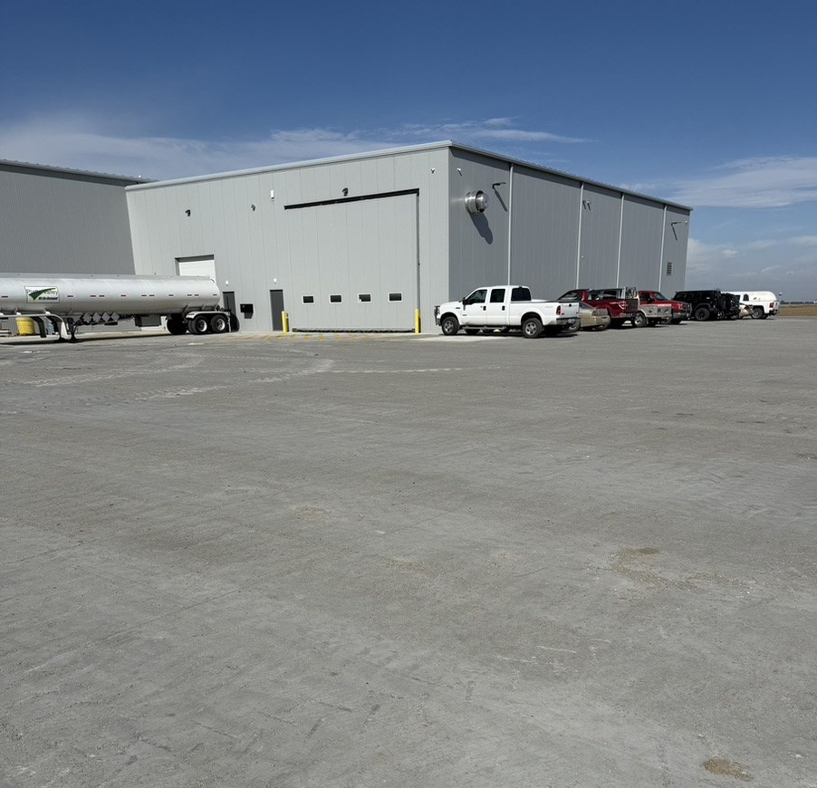

RCC Pavement for Aberdeen, SD Facilities
Aberdeen serves a broad northeast South Dakota trade area with agriculture, processing and manufacturing activity. For a facility project, pavement planning can begin by distinguishing truck loading, employee access and equipment work zones.
Request an Estimate →Plan facility pavement around traffic intensity
Grain terminals, processing operations and industrial facilities have different traffic patterns even when they share heavy vehicles. Identifying axle loads, repeated turns, queuing, drainage and connections to buildings helps the project team evaluate where RCC could be suitable.
- FeedlotFor feed operations, evaluate the route of mixers, loaders and service equipment together with cleanout and runoff needs.
- Grain StorageGrain facilities can plan receiving aprons around conveyor paths, truck approach, storage expansion and the movement of materials through the site.
- Commercial & IndustrialManufacturing and distribution yards should distinguish heavy truck lanes, loading aprons, employee parking and emergency access.
- MunicipalPublic pavement projects can coordinate RCC evaluation with utility work, drainage design, traffic staging and agency requirements.

Bring operations data into the pavement discussion
For an Aberdeen-area site, gather a current layout showing docks, storage, truck paths, yard equipment, utility corridors and areas that must stay open during work. That information can shape practical project limits and construction phases.
Pavement design and material selection should follow site investigation and the project specifications. If you are planning a facility upgrade, contact us to discuss your access, loading and scheduling needs.
Request a Quote →